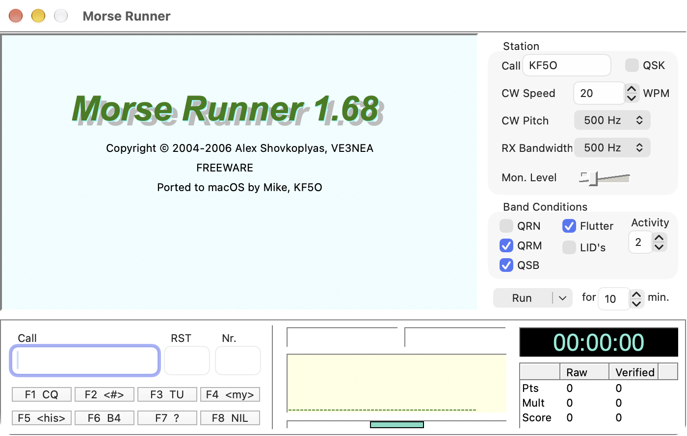

Morse Runner
The classic CW contest simulator, now a native Mac app

Rebuilt from the original Pascal in Swift and AppKit, aiming for 1:1 parity with Morse Runner 1.68 for Windows. Pile-ups, QRM, QSB, flutter and LIDs behave as they always have, and scores are calculated the same way. Every deliberate difference is listed in the parity checklist.
Verify what you downloaded: shasum -a 256 <file> and compare with the hash above.
About
Morse Runner puts you in the operating chair of a CW contest: call CQ, work the pile-up, copy calls and exchanges at speed and see your score. Run it in WPX, single calls, pile-up or HST mode, with QRN, QRM, QSB, flutter and LIDs switchable.
Links
Requirements
| macOS |
macOS 15 (Sequoia) or later Universal — Apple Silicon and Intel |
Getting Started
| macOS |
Unzip and drag Morse Runner to Applications. Signed and notarized — no Gatekeeper warnings. |
Development & Feedback
If something sounds, scores or looks different from Morse Runner on Windows, that's a bug — please open an issue and say what you expected.
View Current Open Issues on GitHub